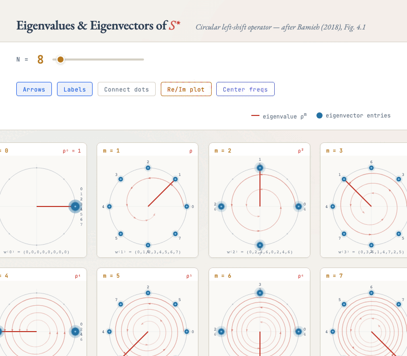

5Commutativity and Shift Invariance
In Chapter 1 we showed that every circulant is a polynomial in $S$, and therefore all circulants commute with $S$ and with each other. Now we prove the converse: commuting with $S$ is not just a consequence of being circulant — it is a characterization.
Proof sketch (Bamieh Lemma 3.1). The forward direction ($\Leftarrow$) is immediate: if $M = p(S)$ for some polynomial $p$, then $SM = Sp(S) = p(S)S = MS$ since polynomials in the same variable commute.
For the reverse direction ($\Rightarrow$), suppose $SM = MS$. Let $e_0 = (1, 0, \ldots, 0)^T$ and write $h = Me_0$ (the first column of $M$). We claim $M = C_h$. To see this, note that $e_k = S^k e_0$ for every $k$, so:
$$ Me_k = M S^k e_0 = S^k M e_0 = S^k h $$The $k$-th column of $M$ is $S^k h$ — a shifted copy of $h$. This is exactly the column structure of a circulant matrix. Therefore $M = C_h$.
The equation $SM = MS$ has a beautiful interpretation. Recall that $S$ implements the group action of $\ZN$ on signals: $S$ shifts by 1, $S^2$ shifts by 2, and so on. The condition $SM = MS$ says: "shifting the input first and then applying $M$ gives the same result as applying $M$ first and then shifting." In other words, $M$ is shift-invariant (or translation-equivariant) — it treats every position on the ring identically.
Key idea: Convolutions are exactly the linear operators that "don't care where you are on the ring." They treat every position the same way. This is the group-theoretic characterization: a linear operator is a convolution if and only if it commutes with the group action. On $\ZN$, the group is generated by $S$, so commuting with $S$ alone suffices.
This characterization is deeper than the polynomial one. It says that convolutions are not just an algebraic convenience — they are the natural linear operators on signals with translation symmetry. If your domain has a symmetry and you want your operator to respect it, you are forced into convolution. There is no other option.
6Simultaneous Diagonalization
We have established that all circulant matrices commute. Now we invoke a fundamental theorem of linear algebra to understand the consequences.
In words: commuting diagonalizable matrices can be simultaneously diagonalized — they share a common eigenbasis. The matrix $P$ whose columns are the shared eigenvectors diagonalizes both matrices at once.
There is a stronger result that is crucial for us:
When $A$ has all distinct eigenvalues, each eigenspace is one-dimensional, and the eigenvectors are determined up to scalar multiples. Any matrix $B$ that commutes with $A$ must preserve each eigenspace, and since each is one-dimensional, $B$ acts as a scalar on each. This means $B$ is a polynomial in $A$ (by Lagrange interpolation on the eigenvalues).
This is the single most important theorem in the course. Everything follows from it. Since all circulants commute, they all share the same eigenvectors. And since $S$ has $N$ distinct eigenvalues (as we will show momentarily), the shared eigenbasis is uniquely determined — forced by the algebra. There is no freedom left. The eigenbasis IS the Fourier basis, and we had no choice in the matter.
Let us state the logical chain explicitly:
- All circulants are polynomials in $S$ (Eq. 4).
- Therefore all circulants commute with each other (Eq. 6).
- Commuting diagonalizable matrices share a common eigenbasis (Eq. 8).
- If $S$ has distinct eigenvalues, the eigenbasis is unique (Eq. 9).
- Therefore: find the eigenvectors of $S$, and you have found the eigenvectors of every circulant.
This is the plan. We now carry it out.
7Eigenvectors of S*
Our goal is to find the eigenvectors shared by all circulants. Since every circulant is a polynomial in $S$, we just need the eigenvectors of $S$. Following Bamieh, we work with $S^*$ (the left-shift) instead — the eigenvectors are the same (they are eigenvectors of $S$ with conjugate eigenvalues), and the derivation is slightly cleaner.
We seek all vectors $w \in \C^N$ and scalars $\rho \in \C$ satisfying $S^* w = \rho w$. Writing this out component by component:
Since $(S^* w)[n] = w[(n+1) \bmod N]$, the eigenvalue equation reads:
$$ w[n+1] = \rho \cdot w[n] \quad \text{for all } n = 0, 1, \ldots, N-2 $$together with the wraparound condition $w[0] = \rho \cdot w[N-1]$. The recurrence $w[n+1] = \rho \cdot w[n]$ has the unique solution:
$$ w[k] = \rho^k \cdot w[0] $$Normalize by setting $w[0] = 1$. Then $w = (1, \rho, \rho^2, \ldots, \rho^{N-1})^T$. Now apply the wraparound condition:
$$ w[0] = \rho \cdot w[N-1] \implies 1 = \rho \cdot \rho^{N-1} = \rho^N $$So $\rho$ must be an $N$-th root of unity: $\rho^N = 1$. There are exactly $N$ such roots:
These are $N$ points equally spaced on the unit circle in the complex plane. For $\Z_8$: $\rho_0 = 1$, $\rho_1 = e^{i\pi/4}$, $\rho_2 = e^{i\pi/2} = i$, $\rho_3 = e^{i3\pi/4}$, $\rho_4 = e^{i\pi} = -1$, $\rho_5 = e^{i5\pi/4}$, $\rho_6 = e^{i3\pi/2} = -i$, $\rho_7 = e^{i7\pi/4}$.
The corresponding eigenvectors are:
Since the $N$ roots of unity are all distinct, $S^*$ (and therefore $S$) has $N$ distinct eigenvalues. By our simultaneous diagonalization theorem, the eigenbasis $\{w^{(0)}, w^{(1)}, \ldots, w^{(N-1)}\}$ is uniquely determined (up to normalization of each vector). This is the Fourier basis.
Let us unpack what each eigenvector looks like. The $m$-th eigenvector $w^{(m)}$ has entries that rotate around the unit circle, making $m$ complete revolutions as the index $k$ runs from $0$ to $N-1$:
- $w^{(0)} = (1, 1, 1, \ldots, 1)^T$ — the constant mode (DC component). Eigenvalue $\rho_0 = 1$.
- $w^{(1)}$ makes one full revolution around the unit circle. Eigenvalue $\rho_1 = e^{i2\pi/N}$.
- $w^{(m)}$ makes $m$ revolutions. Eigenvalue $\rho_m = e^{i2\pi m/N}$.
- $w^{(N-1)}$ makes $N-1$ revolutions (equivalently, one revolution in the opposite direction).
Key idea: We did not choose the Fourier basis. The eigenvalue equation forced it on us. The recurrence $w[k+1] = \rho \cdot w[k]$ has only one solution: a geometric sequence. The periodicity condition $\rho^N = 1$ restricts $\rho$ to the $N$-th roots of unity. There is no other possibility. The Fourier basis is the unique eigenbasis of the shift operator.

8The DFT Emerges
We now have the eigenvectors of $S^*$. But Chapter 1 defined circulants as polynomials in $S$ (the right-shift): $C_a = \sum_k a_k S^k$ (Eq. 4). To find eigenvalues, we need to connect $S$ to $S^*$.
The bridge is simple. $S$ and $S^*$ are inverse shifts on $\ZN$: $S \cdot S^* = I$. Since $S^N = I$ (shifting $N$ times is the identity), we have $S = (S^*)^{-1} = (S^*)^{N-1}$, and more generally:
$$ S^k = (S^*)^{N-k} $$Intuition: on a ring of $N$ elements, shifting a signal clockwise by $k$ steps lands on the same position as shifting counterclockwise by $N - k$ steps — the ring wraps around.
Now apply $S^k$ to an eigenvector $w^{(m)}$:
$$ S^k w^{(m)} = (S^*)^{N-k} w^{(m)} = \rho_m^{N-k} \, w^{(m)} $$The exponent simplifies cleanly: $\rho_m^{N-k} = e^{i2\pi m(N-k)/N} = \underbrace{e^{i2\pi m}}_{=\,1} \cdot e^{-i2\pi mk/N} = e^{-i2\pi mk/N}$. Summing over $k$:
$$ C_a w^{(m)} = \sum_{k=0}^{N-1} a_k S^k w^{(m)} = \sum_{k=0}^{N-1} a_k \, \rho_m^{-k} \, w^{(m)} = \underbrace{\left(\sum_{k=0}^{N-1} a_k \, e^{-i2\pi mk/N}\right)}_{\lambda_m} w^{(m)} $$This holds for every $m = 0, 1, \ldots, N-1$. Stacking all $N$ eigenvector equations into a single matrix equation:
$$ C_a \underbrace{\begin{pmatrix} \vert & \vert & & \vert \\ w^{(0)} & w^{(1)} & \cdots & w^{(N-1)} \\ \vert & \vert & & \vert \end{pmatrix}}_{V} = \underbrace{\begin{pmatrix} \vert & \vert & & \vert \\ w^{(0)} & w^{(1)} & \cdots & w^{(N-1)} \\ \vert & \vert & & \vert \end{pmatrix}}_{V} \underbrace{\begin{pmatrix} \lambda_0 & & \\ & \lambda_1 & \\ & & \ddots & \\ & & & \lambda_{N-1} \end{pmatrix}}_{\operatorname{diag}(\lambda_0, \ldots, \lambda_{N-1})} $$This is the standard eigendecomposition $C_a V = V \Lambda$. The diagonal entries $\lambda_m$ are the eigenvalues of $C_a$, and they are:
This is the Discrete Fourier Transform of the sequence $a$. It appeared not because we postulated it, but because we asked: "what are the eigenvalues of a circulant matrix?" The answer is: the DFT of its defining kernel.
Assembling all the eigenvectors into a matrix $W$ (the DFT matrix, whose precise form we define in the next chapter), the diagonalization reads:
Here $W$ is the DFT matrix — the matrix that transforms a signal from the "spatial" domain to the "frequency" domain. This is simultaneously the diagonalization of $C_a$, the spectral decomposition of the convolution operator, and the definition of the DFT.
Worked example. For $\Z_8$ with our running kernel $h = (3, 1, 0, 0, 0, 0, 0, 2)^T$, the DFT values are $\hat{h}_m = \sum_{k=0}^{7} h_k e^{-i2\pi mk/8}$. Since only $h_0 = 3$, $h_1 = 1$, and $h_7 = 2$ are nonzero:
$$ \hat{h}_m = 3 + e^{-i2\pi m/8} + 2 \, e^{-i2\pi m \cdot 7/8} = 3 + e^{-i\pi m/4} + 2 \, e^{i\pi m/4} $$where we used $e^{-i2\pi m \cdot 7/8} = e^{-i 7\pi m/4} = e^{i\pi m/4}$ (discarding full-revolution factors). Computing a few values:
- $\hat{h}_0 = 3 + 1 + 2 = 6$ (the sum of all kernel entries — always the DC component)
- $\hat{h}_1 = 3 + e^{-i\pi/4} + 2e^{i\pi/4} = 3 + \tfrac{\sqrt{2}}{2}(1-i) + 2 \cdot \tfrac{\sqrt{2}}{2}(1+i) = 3 + \tfrac{3\sqrt{2}}{2} + \tfrac{\sqrt{2}}{2}i \approx 5.121 + 0.707i$
- $\hat{h}_2 = 3 + e^{-i\pi/2} + 2e^{i\pi/2} = 3 + (-i) + 2i = 3 + i$
- $\hat{h}_4 = 3 + e^{-i\pi} + 2e^{i\pi} = 3 + (-1) + 2(-1) = 0$ (the kernel has a null mode!)
The eigenvalue $\hat{h}_4 = 0$ means that the circulant $C_h$ has a nontrivial kernel — the Fourier mode $w^{(4)}$ is annihilated by convolution with $h$. This is a frequency-4 oscillation (alternating $+1, -1, +1, -1, \ldots$) that is invisible to this particular filter. Knowing the eigenvalues tells you exactly which frequencies the filter amplifies, attenuates, or kills.
Key idea: The DFT exists because $S$ has $N$ distinct eigenvalues. It was not a clever guess by Fourier — it was the inevitable consequence of diagonalizing the shift operator. Any time you have a cyclic group acting on a vector space, the representation theory forces the Fourier basis. The DFT is not a transform we impose; it is a transform the algebra demands.
Let us step back and appreciate the logic. We started with the simplest possible algebraic structure: a cyclic group $\ZN$ acting on $\C^N$ via the shift $S$. We asked: what are the linear operators that commute with this action? Answer: circulants (polynomials in $S$). We asked: can we simultaneously diagonalize all of them? Answer: yes, because they commute. We asked: what is the shared eigenbasis? Answer: geometric sequences with roots-of-unity ratios — the Fourier basis. We asked: what are the eigenvalues? Answer: the DFT of the kernel.
Every step was forced. At no point did we have a choice. The DFT is the unique answer to the question "how do you diagonalize convolutions on a cyclic group?"
In the next chapter, we package this into a clean framework — the DFT matrix $W$, the spectral filtering recipe, and the three equivalent characterizations of convolution on $\ZN$ — and then ask what happens when we leave the ring behind and move to general graphs.